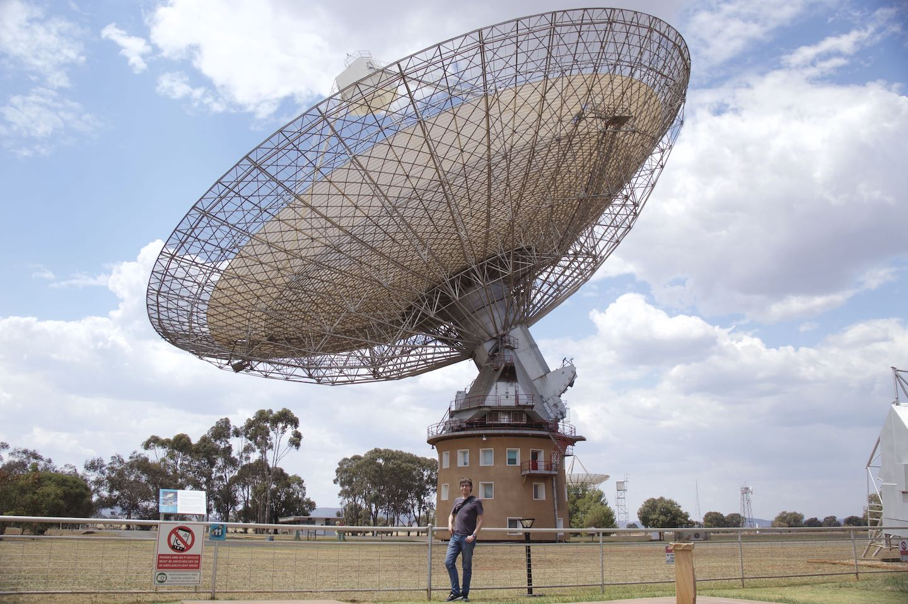

I'm Marcus Lower, an Australian/Canadian astrophysicist.
Currently, I am a postdoctoral research fellow at CSIRO Astronomy and Space Science.
My research focuses on studying the properties of pulsars, rotating neutron stars that emit beams of electromagnetic radiation from their magnetic poles. In particular, I make use of Bayesian inference and pulsar timing techniques to model the properties of pulsars observed by radio telescopes. These include observations taken by the MeerKAT telescope, an SKA pathfinder located in South Africa, the Parkes radio telescope (AKA "The Dish"), and the upgraded Molonglo Observatory Synthesis Telescope (UTMOST).
I completed my PhD at Centre for Astrophysics and Supercomputing and the CSIRO's Astronomy and Space Science division under the supervision of Prof Matthew Bailes, Dr Ryan Shannon and Dr Simon Johnston. The focus of my thesis was on improving our understanding of the magnetospheric and rotational properties of radio pulsars. Prior to then, I completed a Bachelor of Science degree at Monash University, graduating with first class honours in astrophysics and applied mathematics. My honours thesis focused on detecting the signature of orbital eccentricity during the inspiral of binary black holes seen by a future, fully upgraded LIGO. Significant eccentricity is a potential signature of dynamical binary black hole formation in dense stellar evironments such as globular clusters or galactic nuclei.

Me at the Parkes radio telescope in October 2019. Photo credit: Laura Sizer.